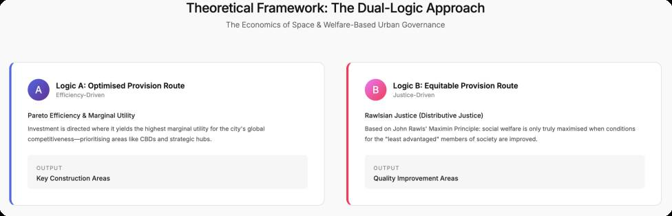
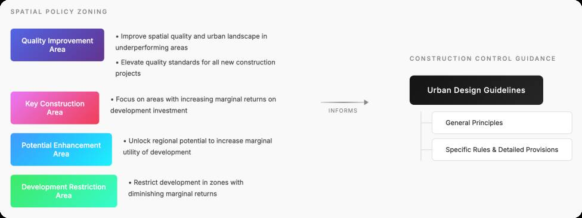

The System and Measures for Overall Urban Design of Shanghai
A special research project supporting the Shanghai Urban Master Plan (2017–2035). It moves master-scale urban design away from an engineering or aesthetic exercise, treats the urban environment as a public good, and positions urban design as a tool of public welfare governance. Drawing on welfare economics, the study builds a method that links spatial diagnosis, economic reasoning and policy zoning, in order to correct the bias of conventional master plans toward city image and aggregate growth and to look instead at how spatial quality, accessibility and environmental security are distributed.
Two principles organise the work. Pareto efficiency and marginal utility identify Key Construction Areas, such as central business districts and hubs, where investment yields the most for the city’s competitiveness. Rawlsian distributive justice identifies Quality Improvement Areas, on the argument that welfare is only maximised when conditions improve for the least advantaged. The study classifies Shanghai’s whole administrative area into policy zones on this basis and develops differentiated guidance for each.
I was responsible for the Quality Improvement Area, which covers underdeveloped suburban districts and historically constrained, ageing inner-city neighbourhoods, with the aim of respecting the city’s heritage while raising its spatial quality.

